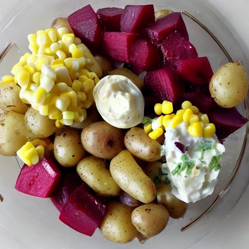

Salade russe
Ingrédients
-
5 lbs patate

-
6 oeufs
-
2 conserve de thon nature
-
1 conserve de betterave
-
1 conserve de maïs
-
3/4 t de mayonnaise
-
1 c. à soupe huile d'olive
Instructions
Éplucher 5 lbs patate. Laver et couper en rondelles dans une cocotte minute. Cuire à la vapeur. Laisser refroidir, puis couper en dés.
Cuire 6 oeufs à la coque[1]. Laisser refroidir, puis couper en dés.
Ouvrir les conserves et égoutter l'eau. Verser dans un cul de poule.
- 2 conserve de thon nature
- 1 conserve de betterave[2]
- 1 conserve de maïs
Ajouter la mayonnaise et l'huile d'olive et mélanger.
- 3/4 t mayonnaise
- 1 c. à soupe huile d'olive
Ajouter les patates et les oeufs en dés. Mélanger.
Notes
[1] Pour cuire les oeufs à la coque, déposer les oeufs une casserole remplie d'eau froide. Porter à ébullition, puis diminuer le feu et laisser cuire pendant 10 minutes.
[2] Personnellement, on préfère de loin les betteraves en conserves que les betteraves marinées. Elles goûtent moins fort. On ne mange pas vraiment de betterave, mais dans cette recette c'est excellent!